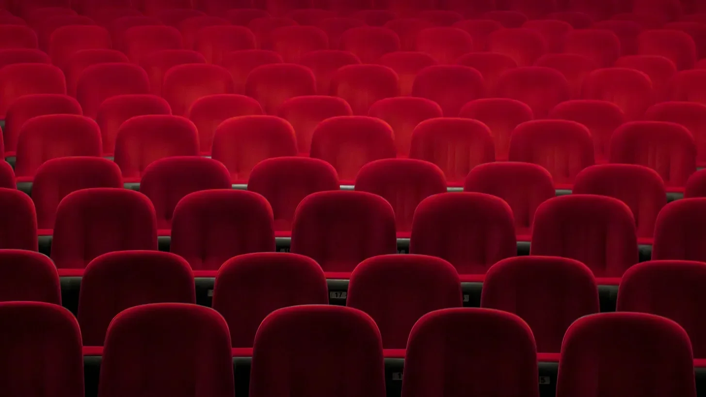

순수한 영화적 고문이 2시간 13분 동안 이어졌는데, 화면에서 나오는 것 때문이 아니었다. 그들 넷이 내 뒤에 앉아서 끊임없이 이어지는 논평과 킥킥거림, 그리고 휴대폰 알림음으로 몰입감 있는 경험이 되어야 할 순간을 망쳐놓았다.
[Two hours and thirteen minutes of pure cinematic torture, and it wasn’t even from what was on the screen. The four of them sat behind me, a constant stream of commentary, snickering, and phone notifications piercing through what should have been an immersive experience.]
그들의 목소리에는 자신의 행동에 대해 한 번도 책임을 져본 적 없는 사람들 특유의 어조가 묻어났다. 평생 동안 제지받지 않은 행동에서 비롯된 그런 종류의 건방진 태도 말이다.
[Their voices carried that particular tone of people who’d never faced consequences for their actions, the kind of entitled swagger that comes from a lifetime of unchecked behavior.]
“야, 저건 완전 가짜잖아"라고 삐걱거리는 신발을 신은 녀석이 속삭였는데, 극장의 절반이 들을 수 있을 만큼 큰 소리였다. 달그락거리는 열쇠를 가진 그의 친구가 코웃음을 치며 자신만의 훌륭한 분석을 덧붙였다. "이 영화 완전 쓰레기네, 브로.”
[“Yo, that’s so fake,” the one with the squeaky shoes whispered, loud enough for half the theater to hear. His friend with the jangling keys snorted, adding his own brilliant analysis. “This whole movie’s trash, bro.”]
나머지 두 명도 자기들만의 실시간 논평을 이어갔고, 이 소란스러운 4중주는 인류의 진화를 의심하게 만들었다.
[The other two joined in with their own running commentary, a quartet of disruption that made me question humanity’s evolution.]
영화에서 조용한 순간이 다가올 때마다 그들은 수다로 그 순간을 채웠다. 긴장된 장면에서는 웃어댔고, 재미있는 장면에서는 핵심 대사를 묻어버렸다.
[Every time the film approached a quiet moment, they’d fill it with their chatter. During intense scenes, they’d laugh. During funny scenes, they’d talk over the punchlines.]
마치 에너지 드링크 광고에서 어휘를 배운 취한 앵무새 네 마리와 함께 영화를 보는 것 같았다.
[It was like watching a movie with four drunk parrots who’d learned their vocabulary from energy drink commercials.]
팔걸이를 더욱 꽉 움켜쥐자 손가락 마디가 하얗게 변했다. 몇 달 동안이나 기다려온 영화의 클라이맥스가 다가오던 순간, 휴대폰 하나가 작은 태양처럼 어둠을 밝혔다.
[I gripped my armrests tighter, knuckles whitening. The film’s climax approached – a scene I’d waited months to see – when a phone lit up the darkness like a miniature sun.]
“얘들아, 이 밈 봐봐,” 폰가이가 말했고, 그들은 모두 키득거리며 고개를 휴대폰으로 기울였다. 그의 화면에서 나오는 푸른빛이 마치 세 줄의 좌석까지 퍼져나가는 것만 같은 산만한 빛무리를 만들어냈다.
[“Guys, check this meme,” Phone Guy said, and they all leaned in, cackling. The blue light from his screen created a halo of distraction that seemed to spread across three rows.]
이를 너무 세게 악물어서 이가 삐걱거리는 소리가 들릴 정도였다. 이 경험을 위해 적지 않은 돈을 지불했고, 휴가도 냈으며, 몇 주 동안이나 스포일러를 피해왔다. 주변의 다른 관객들은 불편한 듯 몸을 뒤척였고, 몇몇은 짜증 난 눈빛으로 뒤를 돌아보았지만, 그 누구도 영화관의 묵시록의 네 기사에게 맞설 만큼 용감하지는 않았다.
[My jaw clenched so hard I could hear my teeth creaking. I’d paid good money for this experience, taken time off work, avoided all spoilers for weeks. Around me, other moviegoers shifted uncomfortably, some throwing irritated glances backward, but none brave enough to confront the four horsemen of theater apocalypse.]
엔딩 크레딧이 올라가는 동안 나는 자리에 앉아서 그들이 흩어진 팝콘 통과 빈 컵들을 모으는 것을 지켜보았다. 그들은 통로를 막은 채 천천히 움직이며, 여전히 수다를 떨고 웃으면서 아마도 그들이 수많은 다른 사람들에게도 망쳐놓았을 다른 영화들과 비교하고 있었다.
[The credits rolled, and I remained seated, watching the four of them gather their scattered popcorn containers and empty cups. They took their time, blocking the aisle, still chattering and laughing, comparing the movie to other films they’d probably ruined for countless others.]
그들의 목소리가 텅 비어가는 극장에 울려 퍼졌고, 그것은 마치 기본적인 예의의 마지막 숨소리 같았다.
[Their voices echoed in the emptying theater like the last gasps of common courtesy.]
나는 그들을 따라 로비로 나섰고, 내 발걸음은 신중하고 의도적이었다. 대리석 바닥은 위쪽의 네온 불빛을 반사하며, 곧 펼쳐질 일을 위한 무대를 만들어냈다. “저기요,” 나는 텅 비어가는 공간을 가로질러 목소리를 냈다.
[I followed them into the lobby, my steps measured and deliberate. The marble floor reflected the neon lights above, creating a stage for what was about to unfold. “Hey,” I called out, my voice carrying across the emptying space.]
그들이 돌아섰고, 그들의 얼굴에는 아직 제대로 된 나쁜 사람을 만나본 적 없는 사람들에게서 보이는 특유의 젊은 오만함이 가득했다. “다음에 영화 볼 때 조언 하나 하죠: 영화 상영 중에는 떠들지 마세요. 여기가 당신네 집이 아니에요. 다른 사람들을 방해하고 있다고요.”
[They turned, faces painted with that particular brand of youthful arrogance that comes from never having met the right kind of wrong person. “A tip for your next movie: Don’t fucking talk during the film. You’re not at home. You’re bothering people.”]
삐걱이는 신발을 신은 녀석이 앞으로 나섰는데, 마치 싸구려 깡패처럼 가슴을 불끈 내밀었고, 그의 친구들은 형편없이 안무된 뮤직비디오의 백업 댄서들처럼 그의 뒤에서 반원을 그렸다. “그래? 그래서 어쩌게?” 그의 숨결에서는 인공 버터와 잘못된 자신감 냄새가 났다.
[Squeaky Shoes stepped forward, chest puffed out like a discount tough guy, his friends forming a semicircle behind him like backup dancers in a badly choreographed music video. “Yeah? What you gonna do about it?” His breath smelled of artificial butter and misplaced confidence.]
예상했던 대로 정확히 펀치가 날아왔다 - 마치 서툰 배우의 연기처럼 뻔히 보이는. 나는 옆으로 살짝 비켜섰고, 내 펴진 손바닥이 그의 뺨을 때리자 로비 벽을 울리는 찰싹 소리가 났다. 그 소리는 마치 완벽하게 터지는 뽁뽁이 같이 만족스러웠다.
[The punch came exactly as expected – telegraphed like a bad actor’s performance. I slipped to the side, and my open palm connected with his cheek with a crack that echoed off the lobby walls. The sound was satisfying, like the perfect pop of bubble wrap.]
열쇠를 가진 녀석이 달려들려 했지만, 내가 그의 팔을 잡아 마치 댄스 파트너처럼 가까이 끌어당긴 뒤, 그의 코를 내 이마에 소개시켜주었다. 그 우두둑 소리는 거의 음악적이었다.
[Keys tried to rush me, but I caught his arms, pulled him close like a dance partner, and introduced his nose to my forehead. The crunch was almost musical.]
폰가이와 남은 친구가 함께 달려들었지만, 분노 때문에 그들의 동작은 엉망이 되어있었다. 나는 허공을 휘두르는 주먹을 피해 몸을 낮췄고, 그들이 서로 엉키도록 두었다가 무릎과 명치를 정확하게 가격했다. 그들은 마치 줄이 반쯤 끊어진 취한 꼭두각시처럼 움직였고, 기술은 없이 공격성만 가득했다.
[Phone Guy and his remaining friend came at me together, but anger had made them sloppy. I ducked under wild swings, letting them tangle with each other before taking them down with precise strikes to knees and solar plexuses. They moved like drunk puppets with half their strings cut, all aggression and no technique.]
그들은 떨어진 팝콘처럼 로비 바닥 여기저기에 널브러져 신음하고 욕설을 내뱉었다. 위에 있는 보안 카메라가 조용히 돌아가며, 아마도 다음 날 아침이면 바이럴이 될 예절 교육을 녹화하고 있었다. 나는 마치 시험지를 채점하는 선생님처럼 천천히 그들 하나하나를 돌아보며 시간을 들였다.
[They lay scattered across the lobby floor like dropped popcorn, groaning and cursing. The security camera above whirred quietly, recording a lesson in manners that would probably go viral by morning. I took my time then, moving from one to the next with the deliberate pace of a teacher grading papers.]
서부영화의 총성처럼 울려 퍼지는 따귀 소리와 함께 그들의 얼굴에는 완벽한 선홍빛 손자국이 남았다. 지울 수 없는 비평가의 리뷰처럼, 며칠 동안 설명해야 할 일시적인 결과의 문신 같은 것이었다.
[The slaps rang out like gunshots in a western, each one leaving a perfect crimson handprint on their faces. A critic’s review they couldn’t delete, a temporary tattoo of consequence they’d have to explain for days.]
“다음번엔,” 나는 비꼬는 미소와 함께 말했다. “세상에는 훨씬 더 인내심이 없고 더 잔인한 방식을 가진 사람들이 가득하다는 걸 생각해보시죠. 이건? 이건 자비로운 경고였을 뿐이에요.”
[“Next time,” I remarked with a sardonic smile, “consider that the world is full of people who have far less patience and far more brutal methods. This? This was a merciful reminder.”]
나는 밤거리로 걸어 나왔고, 그들은 상처받은 자존심과 얼굴의 자국을 어루만지며 남겨졌다. 내 뒤로 극장의 네온사인이 그들의 수치심을 마무리하는 엔딩 크레딧처럼 깜빡였고, 어디선가 멀리서 희미한 박수 소리가 들리는 것 같았다.
[I walked out into the night, leaving them to nurse their wounded pride and marked faces. Behind me, the theater’s neon lights flickered like end credits on their humiliation, and somewhere in the distance, I could have sworn I heard the faint sound of applause.]